About/CV
I am a third-year PhD student in Dynamic Systems and Control at The University of Texas at Austin, advised by Prof. Dongmei (Maggie) Chen (GPA: 3.96/4.0). My research lies at the intersection of control theory, robotics, and optimization, with a focus on building data-efficient, safety-aware autonomous systems. I develop methods that tightly integrate system identification with controller design—leveraging tools such as data attribution, distributionally robust optimization, and LLM-assisted synthesis—to enable controllers that adapt online with formal performance guarantees. I am also interested in co-optimizing motion planning with battery health for long-horizon autonomy in multi-robot systems. My research is supported by the UT Austin School of Engineering (SoE) Fellowship.
Previously, I received my B.E. in Control Engineering from Harbin Institute of Technology (2019–2023, GPA: 3.7/4.0) and was an academic exchange student at UC San Diego (2022–2023).
- Email: jiachenli@utexas.edu
- Phone: 858-305-1833
- City: Austin, TX
- Website: https://jiachenli2001.github.io
- GoogleScholar: [Click here]
- CV: [Click here]
Research Interests
- Robot Learning & Embodied AI: Vision–language–action models, video reasoning, world models for robotics
- LLMs for Control: Multi-agent LLM systems for automated controller synthesis, verification, and decision-making
- LLMs for Healthcare: Agent-based ECG digitization and LLM-driven disease diagnosis
- Control & Optimization: Data attribution for control, data-driven control, distributionally robust optimization, predict-then-control, model predictive control
- Robotics Planning & Safety: Data-efficient trajectory planning, energy- and safety-aware planning, derivative-free trajectory optimization
Curriculum Vitae
Education
University of Texas at Austin
Sep 2023 - Jun 2027 (Expected)
PhD in Dynamic Systems and Control
Mechanical Engineering
GPA: 3.96/4.0
Adviser: Prof. Dongmei Chen
University of Texas at Austin
Awarded Aug 2025
Master of Science in Engineering
Mechanical Engineering
University of California, San Diego
Sep 2022 - Jul 2023
Academic Exchange Student
Harbin Institute of Technology, Harbin, China
Sep 2019 - Jul 2023
Bachelor of Engineering in Control Engineering
GPA: 3.7/4.0
Advisers: Prof. Tong Wang, Prof. Jianbin Qiu, and Prof. Huijun Gao
Experience
Research Assistant
Jan 2024 - Present
Advanced Power Systems and Control Laboratory, University of Texas at Austin
Adviser: Prof. Dongmei Chen
Research Assistant
Apr 2021 - Jul 2023
Research Institute of Intelligent Control and Systems, Harbin Institute of Technology
Adviser: Prof. Jianbin Qiu, Prof. Tong Wang, and Prof. Huijun Gao
Research Assistant
Sep 2020 - Apr 2021
School of Science, Harbin Institute of Technology
Adviser: Prof. Zhanwen Yang
Research
Data Attribution for Control
University of Texas at Austin, 2023–Present
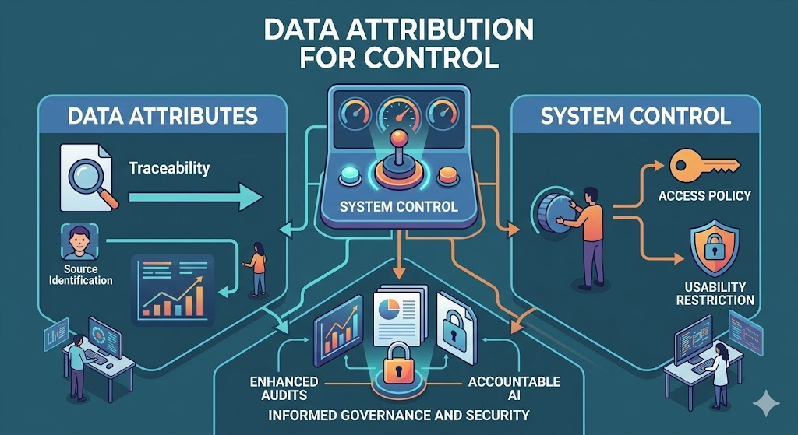
Data Attribution for Control [P6]: Applied influence functions for data attribution in linear system identification and LQR, enabling principled data selection that improves sample efficiency.
Natural Geometry of Robust Data Attribution [P12]: Extended robust data attribution with certified Wasserstein bounds from convex models to deep networks, establishing a natural geometric framework for understanding data influence across model classes.
Datamodel-based Data Selection [P9, P10]: Proposed datamodel-based and sensitivity-based data selection methods for nonlinear Data-Enabled Predictive Control for efficiency.
DM-MPPI [P8, P4]: Extended the Datamodels framework from supervised learning to Model Predictive Path Integral (MPPI) control, enabling efficient trajectory data valuation.
LLM for Control
University of Texas at Austin, 2023–Present
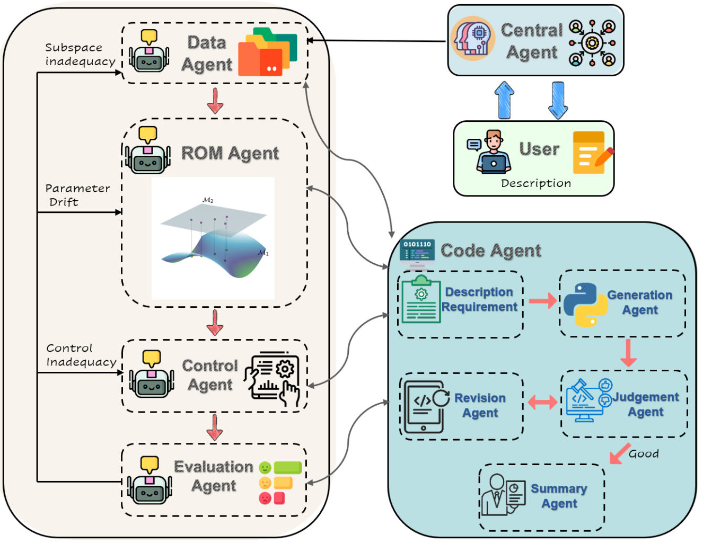
AURORA [P2]: Developed a multi-agent LLM framework for autonomous online updating of reduced-order models and controllers via recursive adaptation. The system employs five specialized agents collaborating through iterative generation-judge-revision cycles, achieving stable tracking under model drift with minimal human intervention across eight benchmark systems.
LLM + LMI Synthesis (S2C) [P3]: Integrated LLM agents with LMI-based synthesis to enable certified H∞ controller design from natural-language specifications. The framework achieves 100% synthesis success on 14 benchmark problems with convergence within six iterations.
SkillsBench [P13]: Co-developed the first benchmark for evaluating how structured procedural knowledge (Agent Skills) improves LLM agent performance across 86 tasks in 11 domains. Developed HVAC control, manufacturing process, and adaptive cruise control benchmarks with corresponding skills. Found that curated skills improve average performance by 16.2 percentage points, and smaller models with skills can match larger models without them. Submitted to ICML 2026.
Video Reasoning
2025–Present
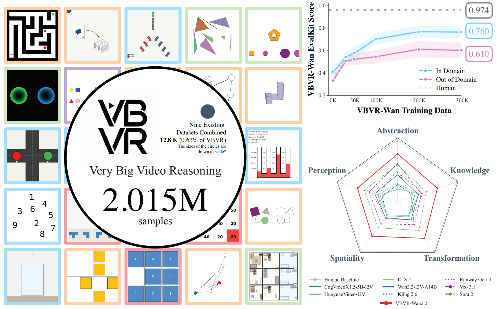
Very Big Video Reasoning (VBVR) [P14]: Helped develop a data generator and supervised the data generation pipeline for a large-scale dataset of 1M+ video clips across 200 reasoning tasks with a verifiable evaluation framework. The suite shows early signs of emergent generalization to unseen reasoning tasks. Submitted to ICML 2026.
Data-Driven Control
University of Texas at Austin, 2023–Present
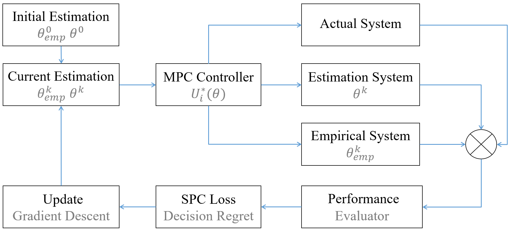
Predict-then-Control [P5]: Proposed a unified framework that merges system identification with control design through decision-regret minimization, reducing closed-loop cost compared to sequential identify-then-control baselines.
MDR-DeePC [C2]: Developed a model-inspired distributionally robust variant of Data-Enabled Predictive Control, improving robustness to noise and model mismatch.
Battery-Aware Motion Planning for Autonomous Mobile Robots
University of Texas at Austin, 2024–Present
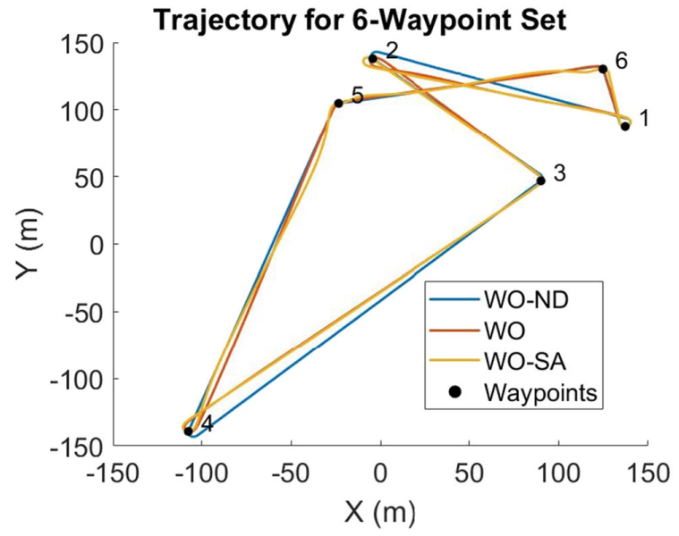
Joint Task-Scheduling and Trajectory Planning [P1, C4]: Formulated a joint optimization that co-optimizes energy efficiency and battery degradation, extending operational battery life for autonomous mobile robots.
Multi-AMR Coordination [P11]: Developed a distributed coordination framework for real-time trajectory and task re-planning across multi-AMR fleets.
Tractable Optimization [C3]: Addressed bilinear terms in the optimization via McCormick envelope relaxations, enabling tractable solutions with bounded optimality gaps.
Roll-to-Roll Manufacturing Control
University of Texas at Austin, 2024–Present
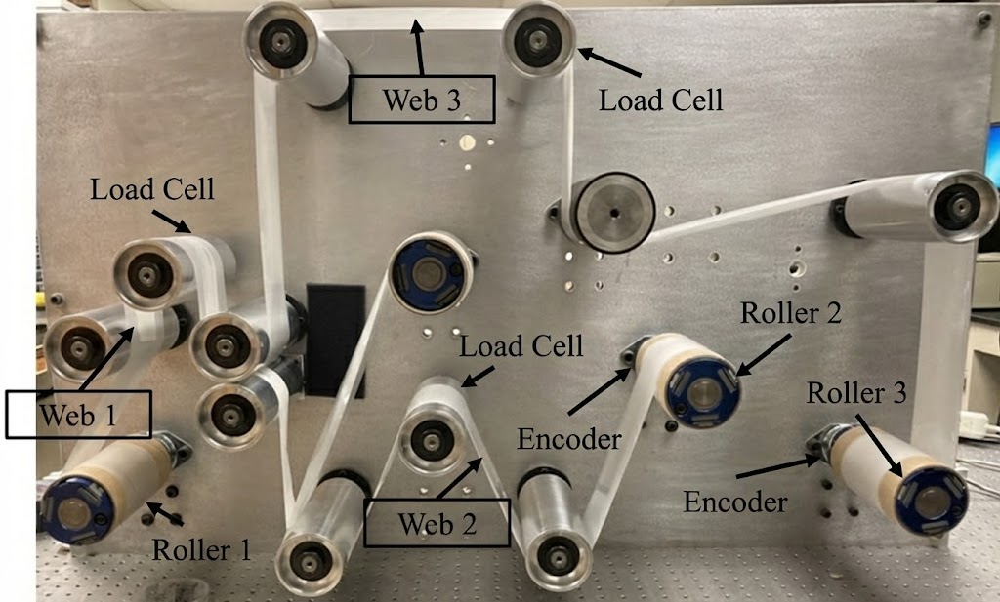
Adaptive Trajectory Bundle Method [P7]: Developed a derivative-free sequential convex programming approach for tension control in multi-section R2R systems, achieving 4.3% lower tension RMSE than gradient-based MPC and 11.1% improvement over baseline in velocity transients.
LLM-Assisted Multi-Agent Control [J4]: Created an LLM-assisted multi-agent control framework that coordinates decentralized controllers for R2R process optimization.
Curriculum-Based Reinforcement Learning [J5, C1]: Co-developed curriculum-based Soft Actor-Critic for multi-section R2R tension control, accelerating training convergence.
Advanced Control Theory
Harbin Institute of Technology, 2020–2023
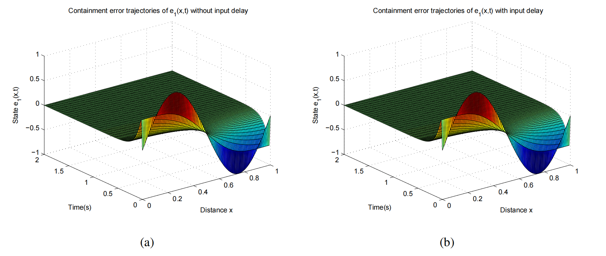
PDE-Based Multi-Agent Control [J1, C5]: Modeled collective dynamics of multi-agent systems as PDEs and proposed optimal containment-control protocols under input delay and spatial boundary communication.
Fault-Tolerant Boundary Control [J2]: Developed adaptive fault-tolerant boundary control for scalar hyperbolic PDE systems with actuator faults, using infinite-dimensional backstepping methods.
Fractional-Order Stability [J3]: Solved an open problem on stability region boundaries for linear fractional-order differential equations with delay; established a stability framework for fractional-order Hopfield neural networks with multiple time delays.
ECG Digitization and Wearable Device
University of Texas at Austin, 2024–Present
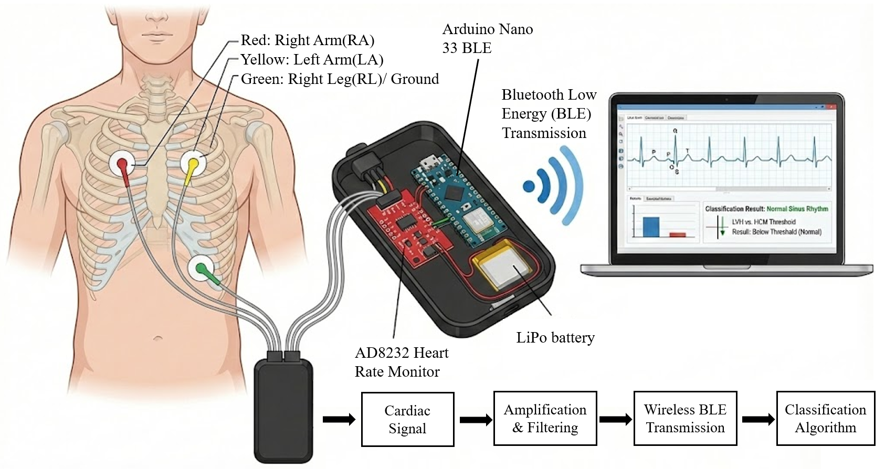
Wearable ECG Device for HCM Screening [P15]: Developed a wearable ECG device paired with a classification algorithm that differentiates Hypertrophic Cardiomyopathy (HCM) from acquired left ventricular hypertrophy using ECG signals alone. The portable device integrates a 3-lead electrode system, AD8232 signal conditioning, and Arduino Nano 33 BLE. The algorithm models each heartbeat as a second-order dynamic system, extracts pole features in the s-domain, and classifies via dual statistical thresholds, achieving 75.86% sensitivity, 99.17% specificity, and F1-score of 80.00%.
Publications
Journal Papers
[J1] PDE-Based Event-Triggered Containment Control of Multi-Agent Systems with Input Delay under Spatial Boundary Communication
Hao Zhang, Jiachen Li, Tong Wang, Qingshuang Zeng, and Huaicheng Yan
International Journal of Robust and Nonlinear Control 33, no. 2 (2023): 753–766
[J2] Output-Feedback Boundary Adaptive Fault-Tolerant Control for Scalar Hyperbolic PDE Systems with Actuator Faults
Runsheng Guo, Jiachen Li, Kangkang Sun, Tong Wang, and Jianbin Qiu
International Journal of Adaptive Control and Signal Processing 36, no. 11 (2022): 2716–2731
[J3] Asymptotical Stability for Fractional-Order Hopfield Neural Networks with Multiple Time Delays
Zichen Yao, Zhanwen Yang, Yongqiang Fu, and Jiachen Li
Mathematical Methods in the Applied Sciences 45, no. 16 (2022): 10052–10069
[J4] An LLM-Assisted Multi-Agent Control Framework for Roll-to-Roll Manufacturing Systems
Jiachen Li, Shihao Li, Christopher Martin, Zijun Chen, Dongmei Chen, and Wei Li
Accepted by NAMRC; recommended for fast-track to Journal of Manufacturing Systems (JMS)
[J5] Curriculum-Based Soft Actor-Critic for Multi-Section R2R Tension Control
Shihao Li, Jiachen Li, Christopher Martin, Zijun Chen, Dongmei Chen, and Wei Li
Accepted by NAMRC / Manufacturing Letters
Conference Papers (Accepted / Published)
[C1] A Repetitive Learning Model Predictive Control Method for Nonlinear Systems with Application to Roll-to-Roll Manufacturing
Christopher Martin, Shihao Li, Jiachen Li, Wei Li, and Dongmei Chen
Accepted by ACC 2025
[C2] MDR-DeePC: Model-Inspired Distributionally Robust Data-Enabled Predictive Control
Shihao Li, Jiachen Li, Christopher Martin, Soovadeep Bakshi, and Dongmei Chen
Accepted by MECC 2025
[C3] Robust Optimal Task Planning to Maximize Battery Life
Jiachen Li, Chu Jian, Feiyang Zhao, Shihao Li, Wei Li, and Dongmei Chen
Accepted by MECC 2025
[C4] Constrained Optimal Planning to Minimize Battery Degradation of Autonomous Mobile Robots
Jiachen Li, Chu Jian, Feiyang Zhao, Shihao Li, Wei Li, and Dongmei Chen
Accepted as Oral, ICCRE 2025
[C5] A Mixed Control Approach to Nonlinear Coupled Burgers' PDE-ODE Systems with Sensor Nonlinearities
Hao Zhang, Jiachen Li, Tong Wang, and Jianbin Qiu
2022 41st Chinese Control Conference (CCC), pp. 2525–2530
Under Review / Preprints
[P1] Optimal Task Planning to Maximize Battery Life for Autonomous Mobile Robots
Jiachen Li, Chu Jian, Feiyang Zhao, Shihao Li, Wei Li, and Dongmei Chen
Submitted to Journal of Power Sources
[P2] AURORA: Autonomous Updating of ROM and Controller via Recursive Adaptation
Jiachen Li, Shihao Li, and Dongmei Chen
arXiv:2511.07768. Submitted to L4DC 2025
[P3] From Natural Language to Certified H-infinity Controllers: Integrating LLM Agents with LMI-Based Synthesis
Shihao Li, Jiachen Li, Jiamin Xu, and Dongmei Chen
arXiv:2511.07894. Submitted to L4DC 2025
[P4] Algorithm-Relative Trajectory Valuation in Policy Gradient Control
Shihao Li, Jiachen Li, Jiamin Xu, Christopher Martin, Wei Li, and Dongmei Chen
arXiv:2511.07878. Submitted to L4DC 2025
[P5] Smart Predict-Then-Control: Integrating Identification and Control via Decision Regret
Jiachen Li, Shihao Li, and Dongmei Chen
arXiv:2506.11279. Submitted to IEEE Control Systems Letters
[P6] Influence Functions for Data Attribution in Linear System Identification and LQR Control
Jiachen Li, Shihao Li, Jiamin Xu, Soovadeep Bakshi, and Dongmei Chen
arXiv:2506.11293. Submitted to IEEE Control Systems Letters
[P7] Adaptive Trajectory Bundle Method for Roll-to-Roll Manufacturing Systems
Jiachen Li, Shihao Li, Christopher Martin, Xu Duan, Wei Li, and Dongmei Chen
arXiv:2511.22954. Submitted to IEEE/ASME Trans. Mechatronics / AIM focused session
[P8] DM-MPPI: Datamodel for Efficient and Safe Model Predictive Path Integral Control
Jiachen Li, Shihao Li, Xu Duan, and Dongmei Chen
arXiv:2512.00759 (2025). Submitted to IEEE Control Systems Letters
[P9] Datamodel-Based Data Selection for Nonlinear Data-Enabled Predictive Control
Jiachen Li, Shihao Li, and Dongmei Chen
arXiv:2512.00276 (2025). Submitted to IEEE Control Systems Letters
[P10] RDS-DeePC: Robust Data Selection for Data-Enabled Predictive Control via Sensitivity Score
Jiachen Li and Shihao Li
arXiv:2511.22952 (2025). Submitted to IEEE Control Systems Letters
[P11] Real-Time Coordinated Battery-Conscious Motion and Task Planning for Multi-AMR Systems
Jiachen Li, Shihao Li, Soovadeep Bakshi, and Dongmei Chen
(2025)
[P12] Natural Geometry of Robust Data Attribution: From Convex Models to Deep Networks
Shihao Li, Jiachen Li, and Dongmei Chen
arXiv:2512.09103 (2025)
[P13] SkillsBench: Benchmarking How Well Agent Skills Work Across Diverse Tasks
Xiangyi Li, Wenbo Chen, . . . , Jiachen Li, . . . , Steven Dillmann, and Han-chung Lee
arXiv:2602.12670 (2026). Submitted to ICML
[P14] A Very Big Video Reasoning Suite
Maijunxian Wang, Ruisi Wang, . . . , Jiachen Li, . . . , Hokin Deng
arXiv:2602.20159 (2026). Submitted to ICML
[P15] A Wearable ECG Device for Differentiating Hypertrophic Cardiomyopathy from Acquired Left Ventricular Hypertrophy
Jiachen Li, Edward Kim, Hanyu Zhu, Shihao Li, Dongmei Chen, and Wei Li
Submitted to Journal of Medical Devices
Awards & Honors
- Professional Development Award, UT Austin Graduate School — competitive travel/research grant for doctoral students, 2025
- School of Engineering (SoE) Fellowship, UT Austin — merit-based fellowship for incoming PhD students, 2023
- First Prize, National College Competition on Internet of Things — top tier among 10,000+ teams nationwide, 2022
- Second Prize, National College Electronics Design Contest, 2021
- First Prize, National College Competition on Mathematics, 2020
- First-Class Scholarship, Harbin Institute of Technology — awarded to top 5% of students, 2020
Technical Skills
- Programming: Python, C++, MATLAB/Simulink, LabVIEW
- ML / Optimization: PyTorch, TensorFlow, CasADi, CVXPY, Gurobi
- Robotics / Simulation: ROS, PyBullet, Gazebo
- Methods: Model Predictive Control (MPC), LMI-based synthesis, convex/nonconvex optimization, reinforcement learning, system identification, data-driven control
- Tools: Git, LaTeX, Docker, Linux
Competition Projects
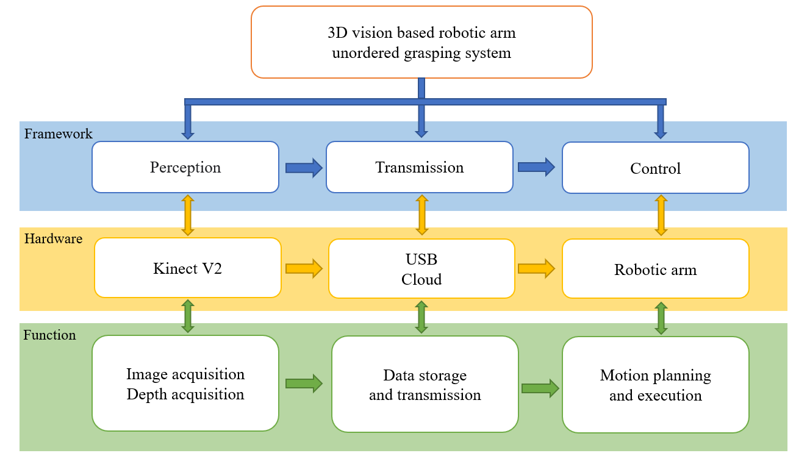
Disorderly gripping of robotic arms
With the gradual improvement of industrial production automation, workpiece sorting, as an important part of industrial production, is developing towards intelligence, efficiency and accuracy. The bin-picking bases on 3D vision can effectively improve the sorting efficiency, free labor, and reduce production costs.
We use Kinect V2 to get the 3D point cloud of the target. Then we implement a positioning method of target workpiece, which is based on template matching. Finally, according to the fixed transformation between the sensor and the robot in Eye-to-Hand system, we propose a hand-eye calibration method based on a three-dimensional calibration object.
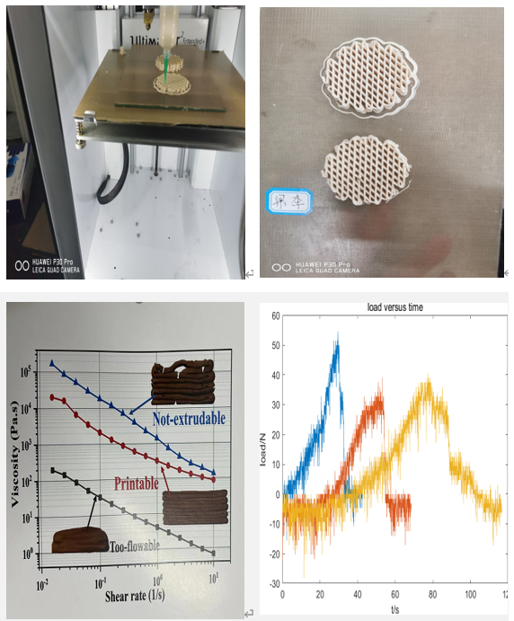
3D-printing of architectured short carbon fiber-geopolymer composite
Developing advanced lightweight structures with both high strength and high toughness remains challenging.
We provide a combined experimental and simulation method to fabricate 3D-printed geopolymer complex structures with lightweight, high strength and superior toughness. The rheological properties of CsfGP inks and the mechanical properties of hardened geopolymer composite structures are systematically studied.
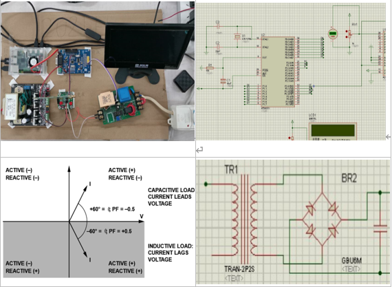
Appliance analysis and identification device
As more and more electrical appliances are designed, the question of electrical safety comes along with them.
We design a device that can identify electrical appliances. It determines the type and operating status of an appliance by collecting its operating status and characteristic parameters. And we use a converter, filter circuit and LSTM for signal processing.
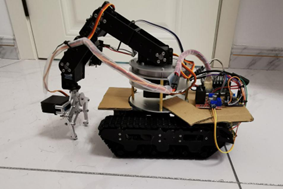
Intelligent Delivery Robot
Inspired by the problem that it is more difficult to find one's own courier manually in the courier center of HIT, we design the intelligent delivery robot.
By sweeping the QR code, robot matches the approximate location information of the delivery package corresponding to it. After arriving at the approximate location, it identifies the specific information of the object and transport the package.
Coursework
Selected Projects:
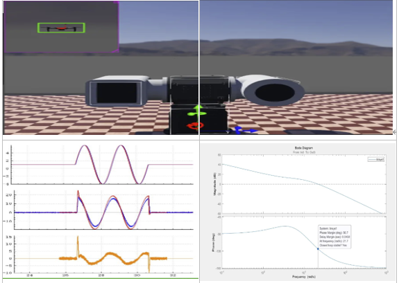
Automatic Control Practice II
Used matlab and simulink to identificate the parameter of servo system in Webots virtual environment
Adopted the double closed-loop PID controller and the disturbance observer to control the pitch axis and yaw axis of simulated aircraft
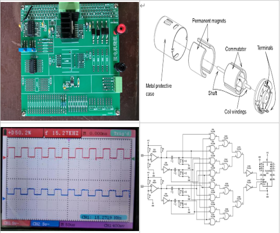
Automatic Control Practice I
Designed a specific motor control circuit with adjustable-speed drives (forward and reverse rotation), user-friendly operations, and a low cost (approximately 50 cents), and then completed the soldering
Analyzed the relationship between input/output quantities by regulating the input signal (both its frequency and duty ratio) and measuring the corresponding output (rotational speed), then calculated the parameters of the controlled motor based on the data collected
Selected Coursework:
Control:
- Multivariable Control Systems
- Learning for Dynamics and Controls
- Learning-Based Optimal Control
- Connected Autonomous Electric Vehicles
- Introduction to Intelligent Control
- Theory of Automatic Control I, II
- Automatic Control Practice I, II
- Introduction to System Engineering
- Stability Analysis and Control of Time-delay Systems
- Introduction to System Modeling and Simulation
- T-S Fuzzy-Model-Based Nonlinear System Control
- Linear Control System Theory
- Control of Interconnected Power System
Robotics:
- Swimming Nanorobot
- Fundamentals of Robotics
- Advanced Mechanism and Control of Robotics
- Intelligent Micromanipulation Robots
- Theoretical Mechanics
- Introduction to Intelligent Systems
Mathematics:
- Introduction to Optimization
- Engineering Analysis
- Computational/Variational Methods for Inverse Problems
- Stochastic Processes I
- Stochastic Systems, Estimation, and Control
- Complex Function and Integral Transformation
- Probability and Statistics
- Mathematical Logic
- Analytical Geometry
- Advanced Linear Algebra I, II
- Mathematical Analysis I, II
- Probabilistic Reasoning and Graphical Models
- Stochastic Process/Dynamic Systems II
- Semidefinite and Sum-of-squares Optimization
Artificial Intelligence:
- Introduction to Machine Learning
- Machine Learning for Physical Applications
- Deep Learning
- Reinforcement Learning and Optimal Control
- Ethics of AI
Electronics:
- Digital Electronic Technology Foundation
- Fundamentals of Analog Electronics
- Electric Circuit I, II
- Electronic Circuits & Systems